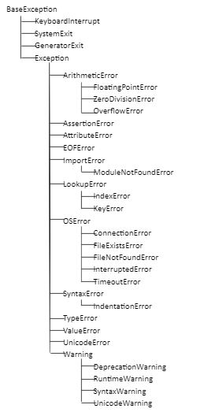

Exception Handling
When a program is developed in python language the program may contain some errors. The errors that occur in the program are classified into two types.
1)Syntax Error
2)Exception
Syntax Error: The errors which occur in the program because of the syntactical mistakes are called as syntax errors.
Exception:
i)The errors which occur in the program because of the logical failure or invalid input or wrong data etc are called as exceptions. The exceptions will occur at runtime.
ii)When an Exception occurs in a program, the program will be terminated abnormally, and incompletely executed.
iii) As a programmer, we want the program to execute completely and terminate normally.
iv) In order to execute the program completely and terminate normally we take help of exception handling.
Exception Handling is a process of finding an alternate solution, so that the program executes completely and terminates normally.
Note: The process of exception handling will not remove the exception from the program.
The keywords related to Exception Handling concept are:
try
except
else
finally
raise
Program: to generate an exception
print('line one')
print(10/0)
print('line three')
print('line four')
In the above program, we are dividing a number by 0. When we divide a number by 0 we get a runtime error called ZeroDivisionError, because of this error the execution of the program will be stopped abnormally which will lead to incomplete execution.
Every exception in python is a class. Every exception in python will be a subclass of Exception class which is subclass of BaseException.
Family of exceptions:

try: A try is a suite which can contain a group of statements which may generate the exception.
Syntax:
try:
statement1
statement2
…………..
try suite is indentated with 4 spaces.
The try suite can contain any number of statements but we are recommended to specify only those statements which may generate the exception.
except: An except is a suite which can contain a group of statements which are used for displaying the information of the exception that has occurred.
Syntax1:
except ExceptionName:
statement1
statement2
…………..
Syntax2:
except Exception1, Exception2, Exception3, … :
statement1
statement2
…………..
Syntax3:
except ExceptionName as variable:
statement1
statement2
…………..
Syntax4:
except (Exception1, Exception2, Exception3, …) as variable:
statement1
statement2
…………..
Syntax5:
except:
statement1
statement2
…………..
else: An else is a suite which can contain a group of statements which will execute when there is no exception in the try suite.
Syntax:
else:
statement1
statement2
…………..
finally: The finally is a suite which can contain a group of statements which can perform code cleanup activities like releasing the files, memory, connections etc.
Syntax:
finally:
statement1
statement2
…………..
Program: to implement exception handling
print("line one")
try:
a = int(input("enter first value : "))
b = int(input("enter second value : "))
print(a/b)
except ZeroDivisionError:
print("ZeroDivisionError has occurred")
except ValueError:
print("ValueError has occurred")
except:
print("some exception has occurred")
else:
print ("else suite")
finally:
print ("finally suite")
print("line three")
print("line four")